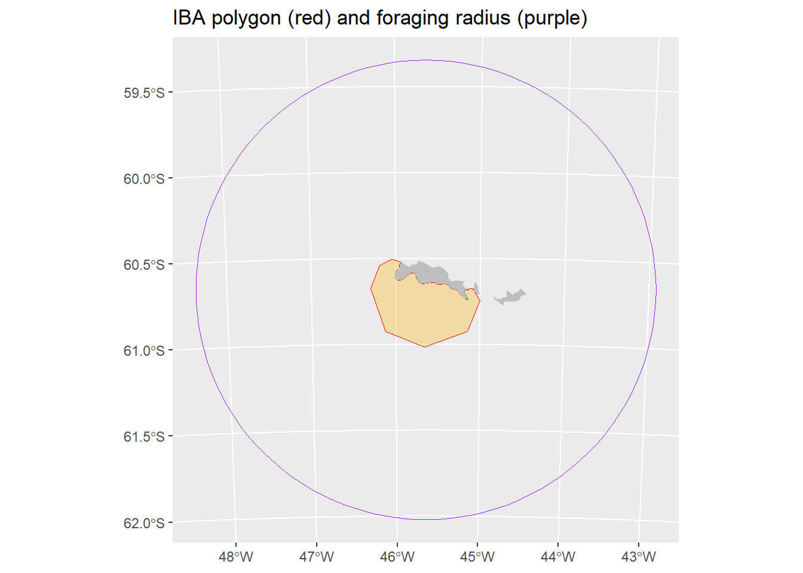

3 Seaward Extensions: Single colony
This analysis was performed in R version 4.2.2 (2022-10-31 ucrt)
This document was last updated on 2023-08-23
3.1 Summary
What does this section cover:
- Create a seaward extension raster and polygon for a colony of breeding seabirds
Input data:
- Seabird breeding colony location (latitude and longitude)
- Abundance estimate for seabird breeding colony
- Global abundance estimate for seabird species
- Estimate of appropriate distance travelled from the colony for behaviour of interest (foraging, or behaviours near to the colony such as rafting, bathing, preening, collecting nesting material). This is usually estimate from tracking data for the species collected at different site. [add guidance on how to find this information]
Outputs:
- A polygon of the site that meets IBA criteria
- Metadata needed for the IBA form
3.2 Load required R packages:
If the packages fail to load, you will need to install them. If the install script fails, try downloading a new version of R here: https://cran.rstudio.com/index.html If that fails try installing Rtools.
#If needed remove the "#" and run the code below to install the packages. This only needs to be done once.
#install.packages("sf")
#install.packages("terra")
#install.packages("rnaturalearth")
#install.packages("smoothr")
#install.packages("tidyverse")
#install.packages("stringr")
#Load the libraries. This needs to done every time R is restarted.
library(sf) #for handling spatial points and polygons
library(terra) #for handling rasters
library(smoothr)#for filling holes in polygons
library(rnaturalearth)# rnaturalearth package for geographic basemaps
library(tidyverse) #for plots and data wrangling
library(stringr) #for text edits
#If it shows, the following warning can be ignored:
#The legacy packages maptools, rgdal, and rgeos, underpinning this package
#will retire shortly. Please refer to R-spatial evolution reports on
#https://r-spatial.org/r/2023/05/15/evolution4.html for details.
#This package is now running under evolution status 0
#Support for Spatial objects (`sp`) will be deprecated in {rnaturalearth} and will be removed in a future release of the package. Please use `sf` objects with #{rnaturalearth}. For example: `ne_download(returnclass = 'sf')`3.3 Supply input data
This script imports a polygon of the land directly into R using the rnaturaleath package. This resolution is generally suitable, but if you want to use a different basemap (e.g. high resolution and/or a particular projection), go to appendix # and this script will give an example.
#go to the iucn red list page for the species.
#Our example is the Adelie Penguin https://www.iucnredlist.org/species/22697758/157660553
common_name <- "Adelie Penguin"
scientific_name <- "Pygoscelis adeliae"
site_name <- "Spindrift Rocks Seaward Extension"
#Global population size (this is not the real value, just used for the example!)
min_global_estimate <- NA
max_global_estimate <- NA
best_global_estimate <- 150000 #this can be the mean of min & max if another best estimate is not available using the code below:
#best_global_estimate <- mean(c(min_global_estimate,max_global_estimate))
#where can partner's get the global estimate
# - we can get data through BirdLife if not available on the red list
#make sure it is mature individuals - not breeding pairs!
#first place to look is red list
#Red List category to know for IBA & KBA criteria
red_list_category <- "LC"
#LC = Least Concern, NT = Near Threatened, VU = Vulnerable,
#EN = Endangered, CR = Critically Endangered
#DD = Deficient (only uses number based thresholds, not %)
#Red list criteria (not applicable for LC)
red_list_criteria <- NA
#if they are globally threatened, only need 20 mature individuals
#For KBAs, also can assess more criteria
#red_list_critera <- c("A2ace","3bce","4ace")
#[add some images for how to get this from iucnredlist.org]
## Colony location
latitude <- -60.683
longitude <- -45.644
#Colony size
colony_size <- 3046
#[add guidance, bp?]
## Maximum colony radius distance (m)
max_colony_radius <- 149000
#add in red list
#if they are globally threatened, only need 20 mature individuals
## Specified resolution of grid cell (m)
grid_res <- 1000
#[For Marine Toolkit, need to provide guidance on choice of resolution. 5km aligned with same scale as the #Critchley et al. 2018 paper, changed to 1km as failed during the example because the birds could cross diagonally through land]
## Land polygon
#Include the name of the country you wish to import a map for
#To include multiple countries use for example "country = c("Antarctica","Chile")"
land <- ne_countries(scale = "large", returnclass = "sf",
country = "Antarctica") %>% st_make_valid()3.4 Format colony location as spatial objects
If the colony location is not projected into an equal areas crs with metres (m) as the unit, this will need to be done before calculating the distance. [add link to page on projections]
#The script requires the spatial data to be projected into an equal areas projection with meters (m) as a unit
#To do this, we create a custom projection centered around the data
basemap <- st_transform(land, crs = paste0("+proj=laea +x_0=0 +y_0=0 +lon_0=",longitude," +lat_0=",latitude))
dev.off()## null device
## 1plot(basemap[1], main = "Basemap")
#format colony location as dataframe
df <- data.frame(cbind(latitude,longitude,colony_size))
#Set coordinate reference system (CRS) for colony locations (example for lat/lon, WGS84)
col_locs <- st_as_sf(df,coords = c("longitude","latitude"), crs = 4326)
#Make sure colony data is projected to the basemap crs
col_locs_proj <- st_transform(col_locs, crs = st_crs(basemap))3.5 Create a background raster
- Create a raster (grid) that can be used for delineation of a seaward extension boundary from a colony of breeding seabirds. This raster will:
- Have a specified cell size (resolution).
- Cover the location of the colony or colonies with a buffer greater than the maximum radius distance.
- Specify cells at either marine or terrestrial (ice can be classified as terrestrial).
#First set a buffer (m) around the colony/colonies + the resolution of the grid to make sure the grid is large enough.
raster_buffer <- max_colony_radius + grid_res
#Find the extent of the colony locations
bounds <- st_bbox(col_locs_proj)
#Create the blank raster grid with the crs of the land polygon
ras <- terra::rast(xmin = bounds[[1]] - raster_buffer,
ymin = bounds[[2]] - raster_buffer,
xmax = bounds[[3]] + raster_buffer,
ymax = bounds[[4]] + raster_buffer,
resolution = grid_res,
crs = st_crs(basemap)$wkt)
#Convert the basemap, currently in polygon format, to a raster and then overlay with the blank raster
basemap_vector <- vect(basemap)
mask <- terra::rasterize(basemap_vector, ras)
mask[is.na(mask)] <- 2
mask[mask == 1] <- NA
mask[mask == 2] <- 1
ras <- mask
dev.off()## null device
## 1plot(ras)3.6 Calculate distance by sea from the colony per cell
- Calculate distances from the colony to each cell travelling only through marine cells, because the birds are expect to travel around land masses rather than over them to reach marine destinations.
- For each raster, the script will provide a note to say whether the calculation is successful and advice on what to do if it is not. [add info about the distance calc successful messages]
## Extract the cell location of the colony
pp <- terra::extract(ras,vect(col_locs_proj), cells=TRUE)
## convert that cell to a value of 2
ras[pp$cell] <- 2
## You now have a raster with colony cell = 2, land cells = NA and sea cells = 1
## Calculate distance from colony via sea, cell values of NA are avoided while determining distance
DistSea <- terra::gridDist(x=ras, # x specifies which raster to use
target=2) # specifies which cell to determine distance from
#Add the minimum grid resolution
DistSea <- DistSea + grid_res
if(terra::minmax(DistSea)[2] == 0) print("WARNING: Check for NAs in final output. Your origin(colony) may be to far in land.
Therefore, your origin is completely buffered by omit cells (land cells),
and no distance calculation for cells at sea can be performed") else print(
"Distance calculation successful")## [1] "Distance calculation successful"dev.off()## null device
## 1plot(DistSea) 3.7 Calculate estimate number of birds from the colony using each cell
- Set any cells that are further that the provided maximum distance from the colony to NA
- Normalise to 0 and 1 probability of occurrence instead of distance using a log decay function
- Multiply by colony size
## Set any cell further than maximum distance to NA
DistSea[DistSea > max_colony_radius] <- NA
## Normalise to 0 and 1 probability of occurrence
ProbOccurence <- -1*(DistSea/max_colony_radius)+1
#Apply logarithmic decay function as done in Critchley et al. 2020.
#https://onlinelibrary.wiley.com/doi/full/10.1111/ecog.04653
#Skipping this step will result in a linear decay. Other decay functions could be input here if justified.
ProbOccurenceLog <- ProbOccurence*(1/log(DistSea))
#Rescale to between 0 and 1
ProbOccurenceLog <- ProbOccurenceLog/
max(values(ProbOccurenceLog), na.rm =T)
#Multiply by population size
PopRaster <- ProbOccurenceLog*colony_size
dev.off()## null device
## 1plot(PopRaster) 3.8 Save raster output
#create a folder to contain the outputs
outputs <- "/seaward_extension_outputs"
dir.create(paste0(wd,outputs))
#save
#terra::writeRaster(PopRaster,paste0(wd,outputs,"/seaward-ext-single-col-dist-ne.tif"), overwrite=T)3.9 Calculate IBA raster
- If the species is not Threatened (Red List category of Least Concern, Near Threatened or Vulnerable), filter out cells containing less than 1% of the global population
if(red_list_category %in% c("LC","NT","VU")){
#Convert to with more (1) or less (0) than 1% of global population
IBA_raster <- PopRaster
IBA_raster[IBA_raster < best_global_estimate/100] <- 0
IBA_raster[IBA_raster >= best_global_estimate/100] <- 1
#plot to check
plot(IBA_raster)
#set to NA cells
IBA_raster[IBA_raster == 0] <- NA
}
#need to save min and max value for IBA forms3.10 Calculate IBA polygon
- Convert to polygon format
- Simplify the polygon to a more usable shape
- Fill in small holes between the land and simplified polygon
- Cut out the area covered by land
- Plot the output
- Also, compare to the foraging radius approach.
#convert raster to a polygon format
IBA_poly_ras <- IBA_raster %>%
terra::as.polygons() %>%
sf::st_as_sf()
#simplify the polygon to a more usable shape
IBA_poly <- IBA_poly_ras %>%
sf::st_simplify(dTolerance = res(IBA_raster)[1]*2)
#get local part of basemap
max_dist_buffer <- st_buffer(col_locs_proj, dist = max_colony_radius)
land <- basemap %>%
st_crop(st_bbox(max_dist_buffer)) %>%
st_union()
#fill in holes in the polygon, and holes between the coastline and the polygon,
#then trim out the areas covered by land
IBA_poly_trim <- smoothr::fill_holes(IBA_poly, threshold = st_area(IBA_poly)) %>%
st_union(.,land) %>%
smoothr::fill_holes(threshold = st_area(IBA_poly)) %>%
st_difference(land)
#plot the result
ggplot(IBA_poly_trim)+
geom_sf(data = IBA_poly_ras, fill = "lightblue", color = NA)+
geom_sf(data = land, fill = "grey", colour = NA)+
geom_sf(fill = NA, color = "red") +
ggtitle("IBA polygon (red) and IBA raster (blue)")
#plot the final polygon with foraging radius approach
ggplot(max_dist_buffer)+
geom_sf(fill = NA, col = "purple")+
geom_sf(data = IBA_poly_trim, fill = "#fcba0350", col = "red")+
geom_sf(data = land, fill = "grey", colour = NA) +
ggtitle("IBA polygon (red) and foraging radius (purple)")
3.11 Plot and save the final IBA polygon
Plot the site and save the polygon as a shapefile (.shp)
#plot the result
ggplot(IBA_poly_trim)+
geom_sf(data = land, fill = "grey", colour = NA)+
geom_sf(fill = "#fcba0350", color = "red") +
ggtitle(site_name)
#save the polygon
#st_write(IBA_poly_trim, paste0(wd,outputs,"/IBA_polygon",gsub(" ","_",site_name),".shp"))3.12 Record the metadata
This is needed for the submission of the site in the WBDB. Many variables have already been input or generated by the script so far. Some need to be calculated: - Area - Coordinates of the mid point - Min/best/max estimate of number of mature individuals in the site (not pairs)
#Calculate the area of the site.
area_hectare <- round(as.numeric(st_area(IBA_poly_trim)/10000))
area_km2 <- round(area_hectare/100)
#Calculate the midpoint of the site and record in the different formats
midpoint <- st_centroid(IBA_poly_trim) %>%
st_transform(4326)
lat_midpoint_decdeg <- midpoint$geometry[[1]][2]
lat_mid_deg <- gsub("-","",gsub("\\..*","",lat_midpoint_decdeg))
lat_mid_decmin <- as.numeric(paste0("0.",strsplit(as.character(lat_midpoint_decdeg), split = "[.]")[[1]][2]))*60
lat_mid_north_or_south <- ifelse(substr(lat_midpoint_decdeg,1,1) == "-", "South", "North")
lon_midpoint_decdeg <- midpoint$geometry[[1]][1]
lon_mid_deg <- gsub("-","",gsub("\\..*","",lon_midpoint_decdeg))
lon_mid_decmin <- as.numeric(paste0("0.",strsplit(as.character(lon_midpoint_decdeg), split = "[.]")[[1]][2]))*60
lon_mid_east_or_west <- ifelse(substr(lat_midpoint_decdeg,1,1) == "-", "West", "East")
#collate the metadata already input or generate in this script
metadata <- as.data.frame(cbind(site_name, area_km2, area_hectare,
lat_midpoint_decdeg, lat_mid_deg, lat_mid_decmin, lat_mid_north_or_south,
lon_midpoint_decdeg, lon_mid_deg, lon_mid_decmin, lon_mid_east_or_west,
common_name, scientific_name, colony_size,
best_global_estimate, red_list_category, red_list_criteria))
knitr::kable(metadata[,1:3], caption = "IBA metadata: Site area")| site_name | area_km2 | area_hectare |
|---|---|---|
| Spindrift Rocks Seaward Extension | 2396 | 239569 |
knitr::kable(metadata[,4:11], caption = "IBA metadata: Site midpoint location")| lat_midpoint_decdeg | lat_mid_deg | lat_mid_decmin | lat_mid_north_or_south | lon_midpoint_decdeg | lon_mid_deg | lon_mid_decmin | lon_mid_east_or_west |
|---|---|---|---|---|---|---|---|
| -60.7830941606618 | 60 | 46.985649639708 | South | -45.699747927423 | 45 | 41.98487564538 | West |
knitr::kable(metadata[,12:17], caption = "IBA metadata: Species name & conservation status")| common_name | scientific_name | colony_size | best_global_estimate | red_list_category | red_list_criteria |
|---|---|---|---|---|---|
| Adelie Penguin | Pygoscelis adeliae | 3046 | 150000 | LC | NA |
write.csv(metadata, paste0(wd,outputs,"/IBA_metadata_",gsub(" ","_",site_name),".csv"),
row.names = F)